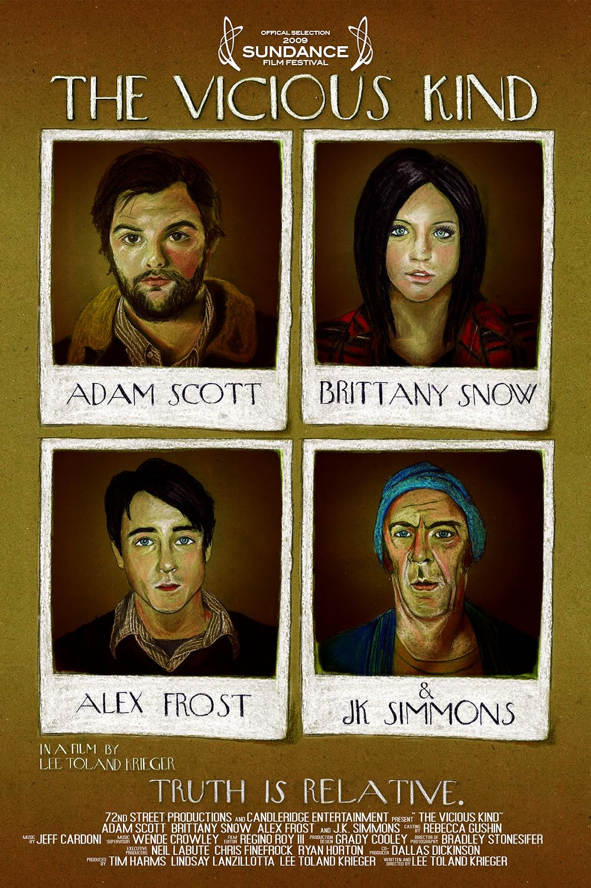

← Back
The Vicious Kind
Director
Lee KriegerProduction Company
Candleridge EntertainmentLead Actors

Logline
A man tries to warn his brother away from the new girlfriend he brings home during Thanksgiving, but ends up becoming infatuated with her in the process.
Press
Press — Filmmaker Magazine
“Shot in cinemascope 35mm, it has a widescreen expressiveness that is rare in low budget work.”Gallery





Selects